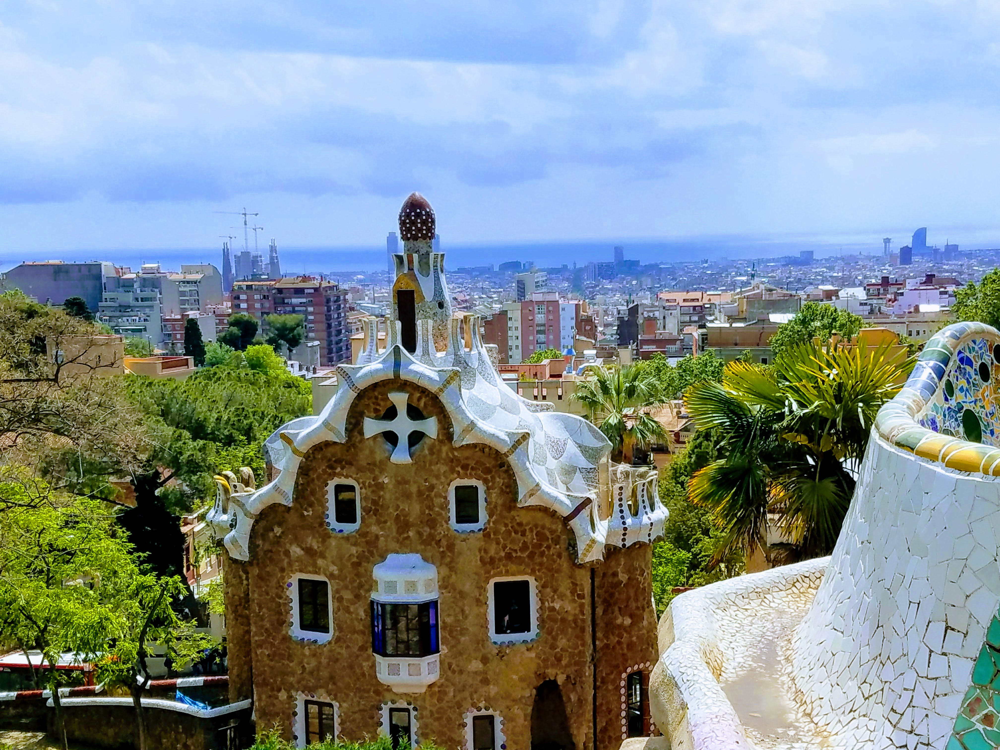
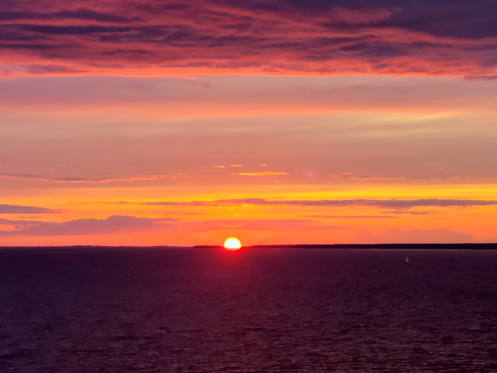
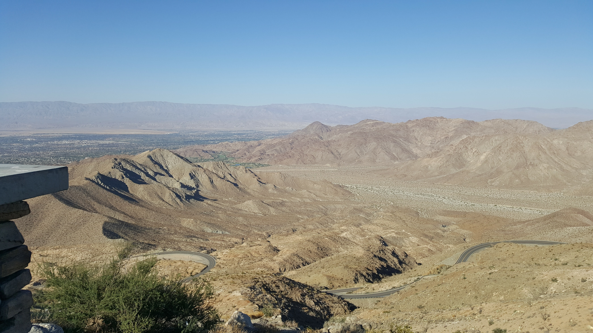
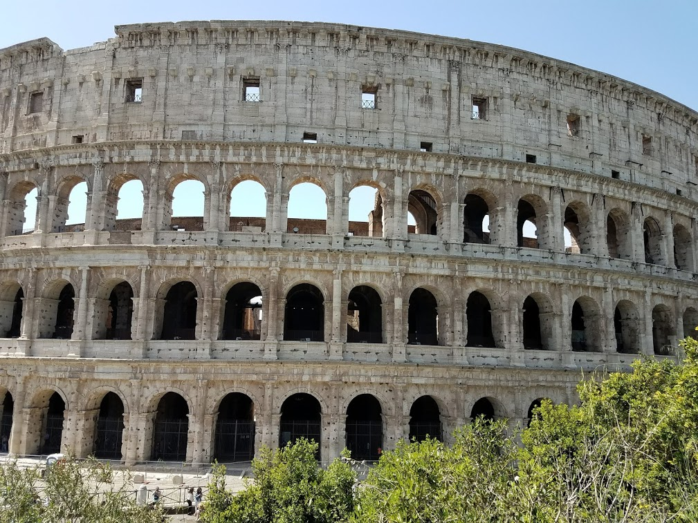

Jasmine's Portfolio
Hi! I'm Jasmine. I am a Computing Science student, history enthusiast, bookworm and traveller.

Click here to get a random quote:
Scenic Photos
I enjoy photographing scenery and picturesque landscapes.

Tallin, Estonia

{kind=link}
Barcelona

{kind=link}
Sunset over the Baltic Sea

{kind=link}
Palm Desert, California

{kind=link}
Colosseum, Rome

Peterhof Palace, St Petersburg
Projects and Community Engagement
- International Space Settlement Design Competition (ISSDC):
ISSDC is an aerospace engineering competition designed for high school students. I collaborated with 6 team members on an extra-curricular project where we considered all the logistics (structural and operational considerations) to design a space settlement on Mars. Our team qualified for the final round of the competition hosted by NASA at the Kennedy Space Center in Florida. - Computer Science Peer Tutoring:
I have been volunteering as a Computer Science peer tutor in the Faculty of Applied Sciences at my university. As part of this role, I'm also involved in promoting STEM outreach and engagement for students who may be interested in exploring the field. - Wish Youth Network Society:
I have volunteered with Wish Youth Network Society (WYNS). WYNS is a non-profit organization which strives to support youth with serious medical conditions.
Books
Some books that left a lasting impression on me:
- The Book Thief by Markus Zusak
- Atonement by Ian McEwan
- Pride and Prejudice by Jane Austen
- Brother by David Chariandy
- Bitter in the Mouth by Monique Truong
- Picture of Dorian Gray by Oscar Wilde